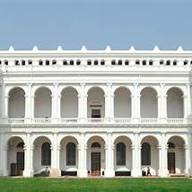
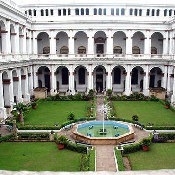
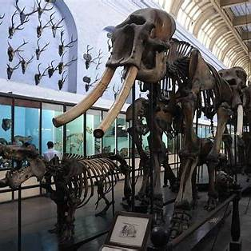
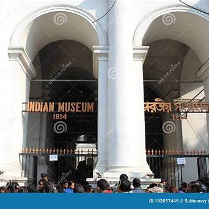

About Indain Museum




The Indian Museum in Kolkata, established in 1814 by the Asiatic Society of Bengal, is the oldest and largest museum in India and one of the oldest in the world. It houses a vast collection of over 2.5 million artifacts, including antiques, armor, ornaments, fossils, skeletons, mummies, and Mughal paintings.
Galleries: The museum comprises 35 galleries across six sections: Indian Art, Archaeology, Anthropology, Geology, Zoology, and Economic Botany. Notable exhibits include the Egyptian Mummy, the complete railings and gateways of the Buddhist stupa from Bharhut, and a large collection of Buddhist and Hindu sculptures from Bengal, Bihar, and Odisha.
Visitor Information: The museum is open from Tuesday to Sunday, 10:00 AM to 6:00 PM, and is closed on Mondays and public holidays. Entry fees are INR 75 for adults, INR 20 for visitors below 18 years, and INR 500 for foreign nationals. Photography is permitted with a fee of INR 50 per mobile device.
Facilities: The museum is equipped with a lift for accessibility. Visitors are advised to store large bags at the entrance, as they are not allowed inside.
Details
Location : Situated at 27, Chowringhee Road, Park Street, Kolkata - 700016
Phone : +913322521790 (Shri Arijit Dutta Choudhury - 'Director-in-charge')
Email : indianmuseumkolkata2@gmail.com